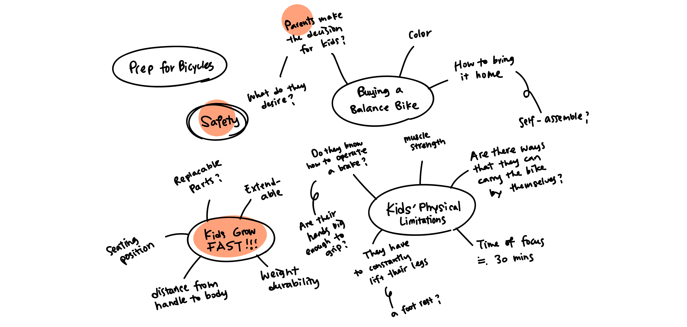
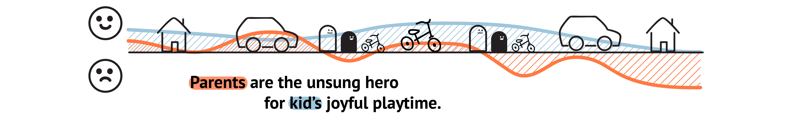
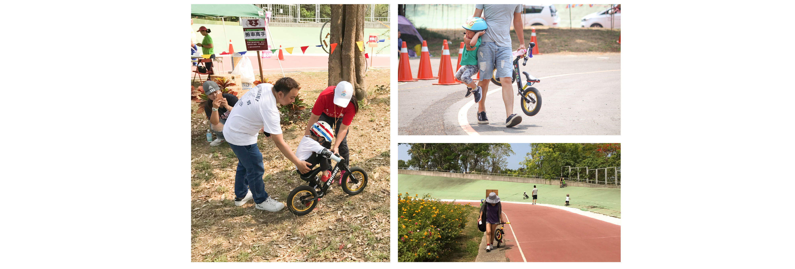
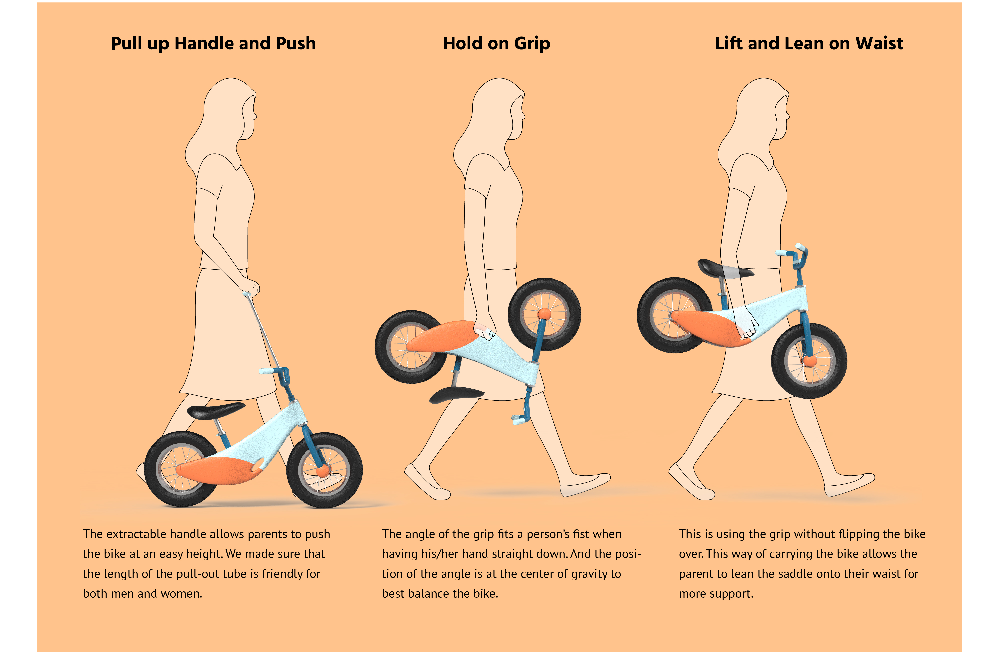
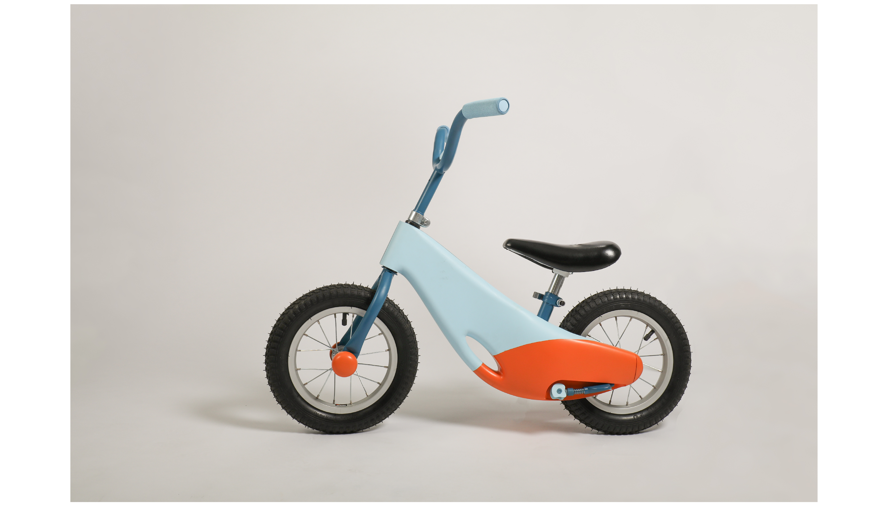
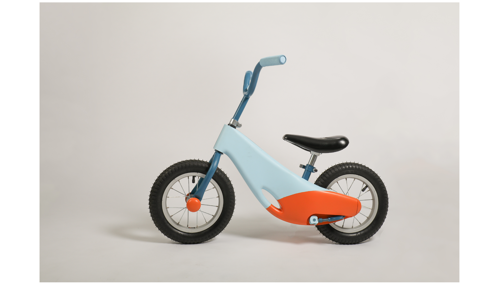

Bama, 爸媽, papa mama, mom and dad. Bama bike is re-thinking balance bikes, in a way that it can be an enjoyable experience for both kids and their parents. Bama bike provides new ways to carry a bike, also with lots of care on the safety aspect to create optimal experience for our big and small users.
A balance bike is a training bike that helps children learn balance and steering. It has no foot pedals and no gears; it only moves when the rider scoots. A balance bike must be small enough for the rider, usually kids age 1.5 to 6 years, to be able to put both feet flat on the ground. Essentially, it’s a mini dandy horse for kids.

Through research, interview, and observation research, we looked into different aspects of using a balance bike. Looking at some problems that existing balance bikes have and trying to find out what they could have but didn’t achieve, we sorted out these directions that we could potentially focus on:
At first, we focused a lot on the bike itself, but after our field research, we realized that from preparing for going out, carrying the bike, looking after kids’ safety, etc. Parents are the hidden user of a balance bike.
 
Parents are often the ones who carry the bike around since the kids are so small and barely have muscle strength. However, in order to accomodate to the size and height of a regular balance bike, parents often have to walk at a weird position to hold onto the handle.
Our goal is always to build a model that bears the weight of a kid, hence we decided to purchase a balance bike and modify it to our design. We really throught through our order of construction before starting since the time given is very limited. And there are a lot of other details to pay attention to: measurements of fins to locate the skeleton in the 3D-printed shell, covering the blue when spray-painting orange, calculating tolerances, etc.
 

We brought our bike to a park, and invited families to try out our design. We recieved positive feedbacks! One of the parents said that the pull-out handle doesn’t look as stirdy as it actually is, maybe there is a way to improve sense of reliability. Kids all loved it, and some parents asked if this would be on the market!

Bama Bike won us a First Prize at the ID annual exhibition!

Claire Hsu
Sophia Tseng